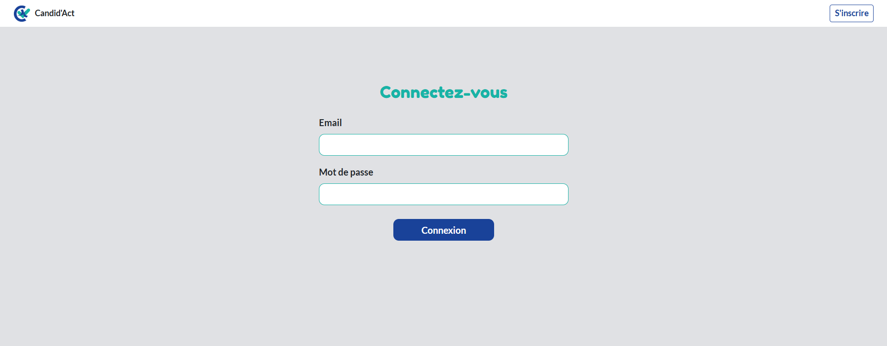
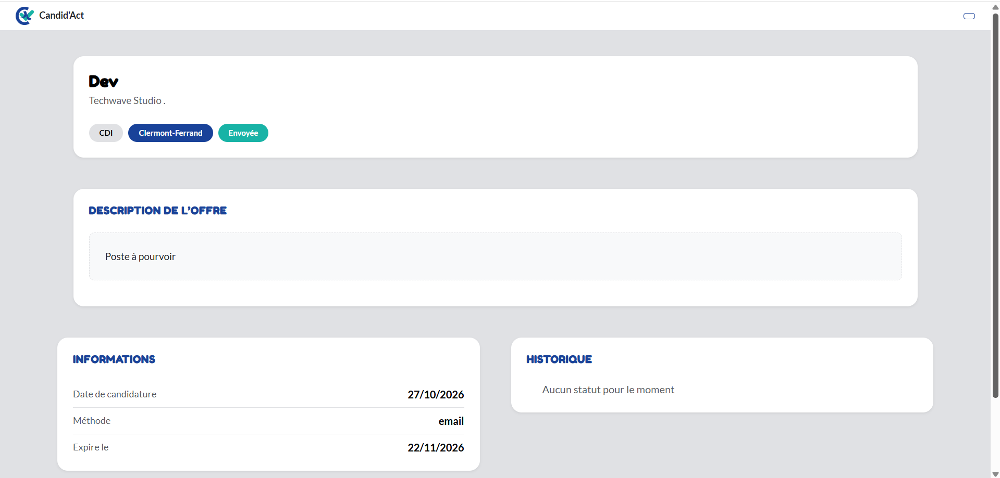

Présentation
Candid'Act est un outil de suivi de candidatures, conçu durant un Hackathon mis en place par Simplon : chaque utilisateur retrouve ses candidatures dans un tableau de bord, consulte le détail de chacune (offre, méthode de candidature, historique des statuts), dispose de quelques statistiques sur son activité et voit des rappels sur les actions à mener. Le projet a été réalisé en équipe de quatre lors du hackathon (6 jours), des diagrammes UML aux maquettes, en passant par le développement.
Stack technique
- Front : Angular 19 (composants standalone, signaux), TypeScript, RxJS, Bootstrap 5
- Back : PHP 8.3, Symfony 7.4, API Platform 5, Doctrine ORM, MariaDB 11
- Sécurité : authentification par jeton JWT (LexikJWTAuthenticationBundle), mots de passe hachés par Symfony
- Outils : Docker, Doctrine Fixtures, Git/GitHub avec une branche par user story, Figma (maquettes), Trello commun
Ma contribution
J'ai pris en charge 2 éléments du tableau de bord, du front jusqu'au back, ainsi que l'intégration du travail du reste de l'équipe sur celui-ci. J'ai également fait le front des pages de connexion et d'inscription :
- Conception globale du projet (en équipe) : Diagrammes, concept, maquettes et wireframes, ainsi que la rédaction des user stories.
- La page de connexion et d'inscription : formulaires avec validation côté front, gestion des erreurs et des messages de succès.
- La liste des candidatures : cartes fidèles à la maquette, pagination, états de chargement, d'erreur et d'absence de données.
- Les statistiques : quatre indicateurs (candidatures envoyées, envoyées cette semaine, entretiens, relances) calculés par un service dédié et exposés par la route
GET /api/stats. - Les rappels : un bandeau d'actions à mener, trié par échéance avec les retards en premier.
- L'intégration (en équipe) : fusion des branches de l'équipe (ajout d'une candidature, page de détail et barre de recherche), résolution des conflits, et dépannage de l'environnement Docker pour que chacun puisse travailler.
Modélisation des données
Le modèle compte huit entités : User, Application, Company, Offer, ApplicationMethod, Status, StatusApplication et Reminder. Un choix de modélisation structure toute l'application :
- Le statut n'est pas une colonne de la candidature : chaque changement est une ligne de l'entité
StatusApplication(candidature, statut, date). Le statut courant est le plus récent, et l'historique affiché dans le détail vient de la même table. C'est aussi ce qui permet de savoir qu'une candidature a déjà été relancée. - L'offre est facultative : une candidature peut exister sans offre associée, ce qui oblige le back et le front à gérer les deux cas, par exemple pour le titre affiché sur une carte.
Architecture du back
Le back combine deux approches, chacune pour ce qu'elle fait de mieux :
- API Platform pour ce qui ressemble à du CRUD : la liste des candidatures (groupes de sérialisation, tri, filtre de recherche sur le poste et l'entreprise) et l'inscription (validation et erreurs structurées).
- Des contrôleurs Symfony pour les cas particuliers : création et détail d'une candidature, statistiques et rappels.
- Une extension Doctrine qui restreint automatiquement la liste aux candidatures de l'utilisateur connecté, sans que chaque requête ait à y penser.
Cette cohabitation a posé un soucis : deux routes sur la même URL, et c'est API Platform qui l'emportait. Il a donc fallu atribué un autre chemin aux routes des quelques controllers.
Statistiques et rappels calculés à la demande
Ni les statistiques ni les rappels ne sont stockés en base. : ils sont recalculés à chaque affichage, uniquement à partir des candidatures de l'utilisateur.
- Des services indépendants : les règles de calcul sont dans deux classes de service, sans dépendance au contrôleur ni à la base.
- Une semaine du lundi au dimanche, calculée dans le fuseau Europe/Paris, avec des comparaisons au jour et non à l'heure.
- Des règles de rappel par statut : postuler, relancer, abandonner après deux relances, préparer ou relancer après un entretien, répondre à une offre, et aucune alerte pour les statuts finaux. Les délais sont des constantes nommées, pas des chiffres répétés dans le code.
Interface Angular
- Templates séparés dans des fichiers
.html, et contrôle de flux moderne (@if,@for) avec la vérification stricte des templates activée : une erreur de type bloque la compilation. - Signaux pour les données d'entrée des composants et pour charger la page de détail à partir de l'identifiant de l'URL.
- Une charte graphique en variables CSS (couleurs et polices) et des classes utilitaires Bootstrap plutôt que du CSS à la main, avec une mise en page adaptée au mobile.
- Des états toujours prévus : chargement, erreur et absence de données sur chaque bloc, et une erreur sur les statistiques ou les rappels n'entrave pas le bon fonctionnement de l'application.
Authentification et sécurité
- Connexion par jeton JWT : le front le conserve et l'ajoute à chaque requête grâce à un intercepteur HTTP.
- Une garde de navigation (auth guard) protège les pages privées et renvoie vers la connexion sans jeton.
- Côté back, les routes sont réservées aux utilisateurs connectés et limitées à leurs propres données : la liste, le détail, les statistiques et les rappels ne montrent que les candidatures de l'utilisateur.
Travail en équipe, enseignements et points d'amélioration
Une branche par user story, des merges réguliers (localement, puis sur les dépôts distants) et un environnement Docker commun. De plus, nous avions 3 dépôts : Un front, un back, et ces deux dossiers se trouvaient dans un dossier Docker, contenant la configuration du projet. Concernant les difficultés, ce qui nous a le plus ralentis n'était pas le code, mais l'intégration :
- Des merges qui écrasaient ou dupliquaient des fichiers : n'étant pas familiers avec un versionnement en plusieurs dépôts, nous avons rencontrés quelques dissonances dans le code, lorsque nous devions mettre en commun les fronts et backs récemment fusionnés.
- Un format de réponse API pas toujours défini avant de coder : le front attendait des champs que le back ne renvoyait pas encore.
- Des tests négligés : les règles de calcul sont isolées dans des services justement pour pouvoir les tester, et ce serait la première étape si le projet continuait. Le reste des tests n'a pas été fait non plus, par manque de temps.
- Un jeton d'authentification stocké côté navigateur : le jeton JWT est conservé dans le
localStorage, où un script injecté (faille XSS) pourrait le lire. Nous avions identifié la solution, un cookieHttpOnlyinaccessible au JavaScript, mais elle demandait de modifier à la fois le back (configuration du bundle JWT et de la déconnexion) et le front (service d'authentification, intercepteur et garde). Faute de temps, elle n'a pas pu être mise en place.